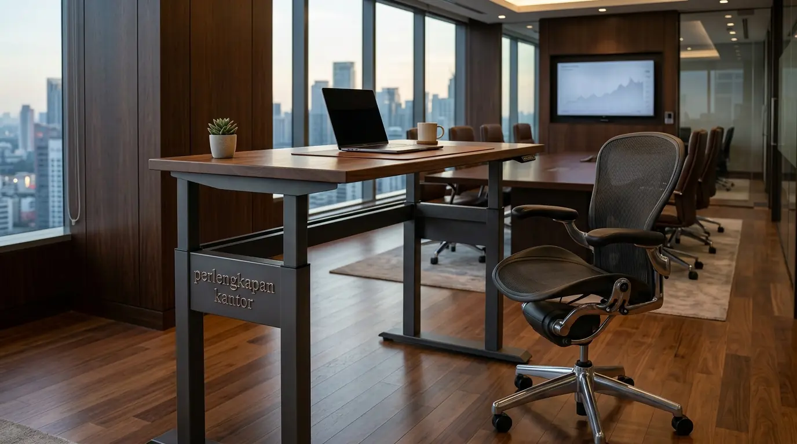
Promo Paket Standing Desk & Kursi Ergonomis Kantor Modern Jakarta
Solusi bundel meja kerja elektrik adjustable dan kursi ergonomis lumbar support hemat 20% untuk kantor modern Jakarta.
Baca Artikel arrow_forward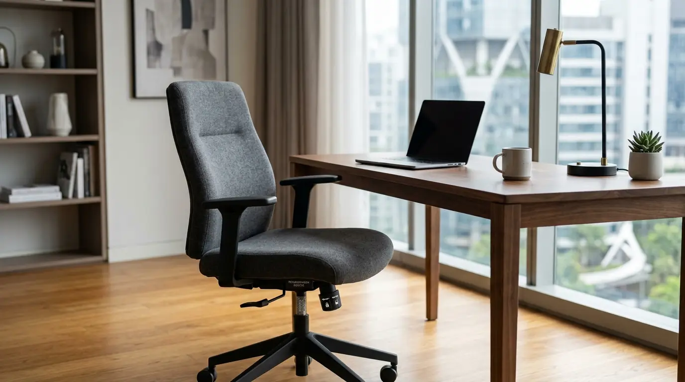
Review Kursi Kerja WFH Minimalis di Bawah 800 Ribu Rupiah
Review kursi WFH murah di bawah 800 ribu rupiah dengan desain ergonomis, sandaran jaring mesh, dan hidrolik pneumatic penyesuai tinggi.
Baca Artikel arrow_forward
Mengapa Setiap Kantor Hukum & Keuangan Wajib Memiliki Paper Shredder?
Lindungi dokumen rahasia kantor hukum dan keuangan Anda dari kebocoran data fisik. Dapatkan panduan spesifikasi dan rekomendasi terbaik di sini.
Baca Artikel arrow_forward
Distributor Kertas HVS A4 70 Gsm Grosir Termurah untuk Kantor Jakarta
Suplai kertas HVS A4 70 Gsm grosir termurah untuk kantor Jakarta dengan harga kartonan B2B dan gratis pengiriman.
Baca Artikel arrow_forward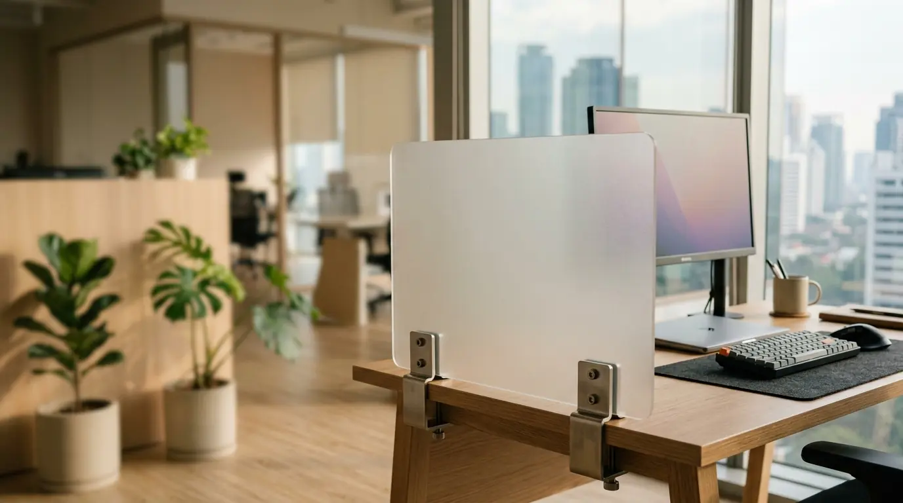
Rekomendasi Sekat Meja Kerja Akrilik untuk Kantor Modern & Elegan
Rekomendasi sekat meja kerja akrilik kantor terbaik untuk memberikan privasi kerja, tampilan elegan, dan kenyamanan di kantor modern.
Baca Artikel arrow_forward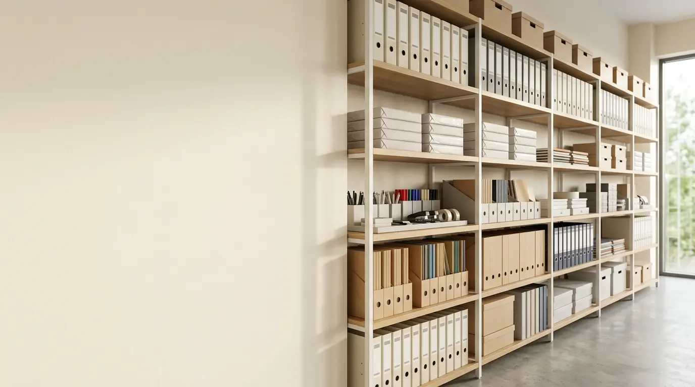
Cara Membuat Anggaran ATK Kantor Tahunan Agar Lebih Hemat 20%
Panduan praktis cara membuat anggaran ATK kantor tahunan secara terstruktur guna menekan pemborosan belanja operasional perusahaan.
Baca Artikel arrow_forward
Promo Paket WFH Ekonomis (Meja Lipat + Kursi Mesh) Gratis Ongkir Jakarta
Penawaran spesial promo paket WFH murah gabungan meja lipat praktis dan kursi ergonomis mesh gratis ongkir seluruh wilayah Jakarta.
Baca Artikel arrow_forward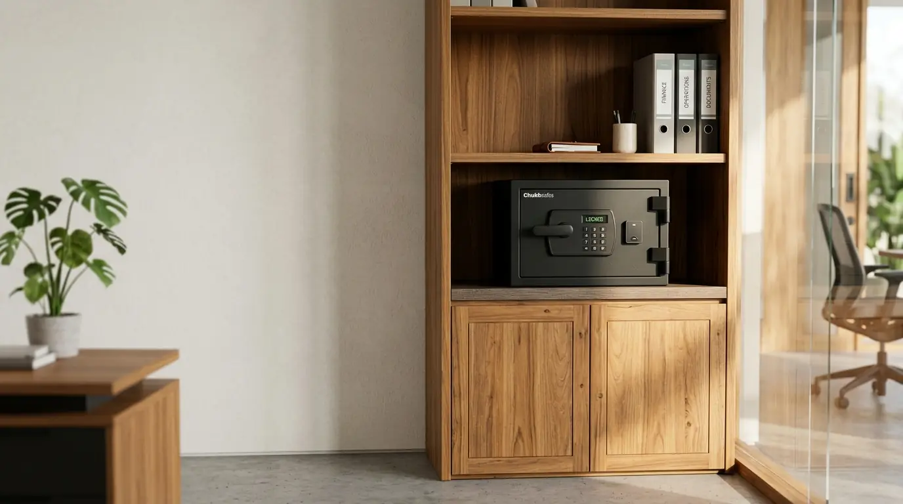
Review Brankas Digital ChubbSafes vs Yale: Mana yang Lebih Aman?
Komparasi lengkap brankas digital ChubbSafes vs Yale dari faktor sertifikasi tahan api, penguncian elektronik, hingga nilai efisiensi anggaran.
Baca Artikel arrow_forward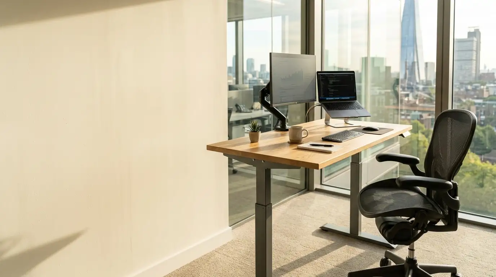
Cara Mengatur Tinggi Standing Desk yang Benar untuk Postur Tubuh
Panduan praktis cara mengatur standing desk yang benar untuk menjaga postur tubuh netral, mencegah nyeri punggung, dan tingkatkan konsentrasi kerja.
Baca Artikel arrow_forward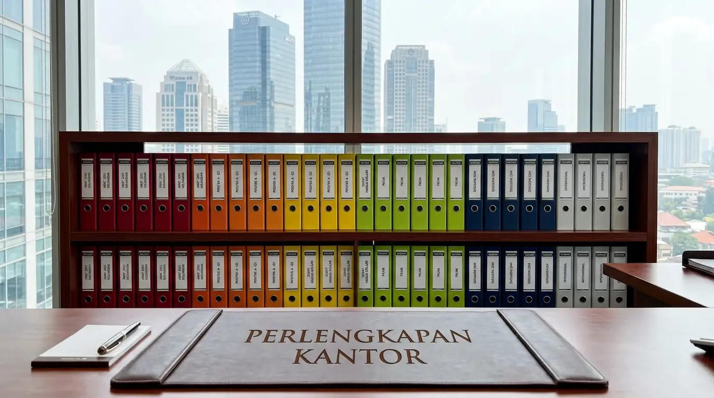
Cara Menata Arsip Kantor Rapi Praktis Pakai Ordner
Pelajari cara menata arsip kantor dengan rapi menggunakan ordner untuk efisiensi kearsipan. Dapatkan penawaran Perlengkapan Kantor grosir sekarang.
Baca Artikel arrow_forward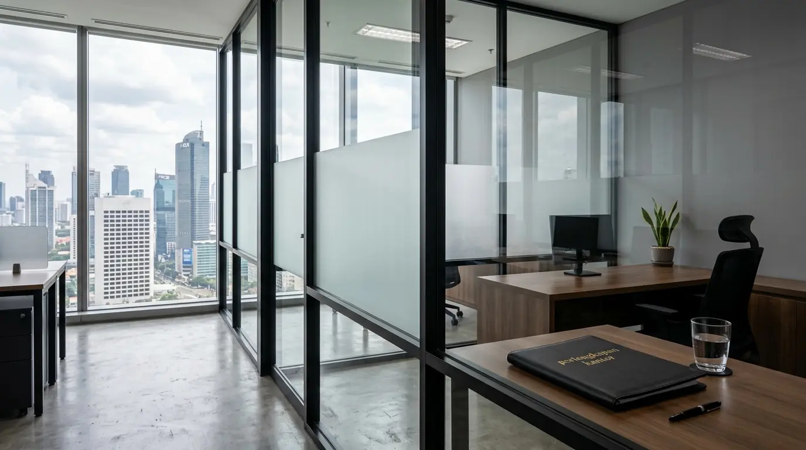
Jasa Pemasangan Partisi Kantor Jakarta Aluminium Kaca
Layanan jasa pemasangan partisi kantor Jakarta berbahan aluminium dan kaca berkualitas tinggi. Dapatkan penawaran Perlengkapan Kantor sekarang.
Baca Artikel arrow_forward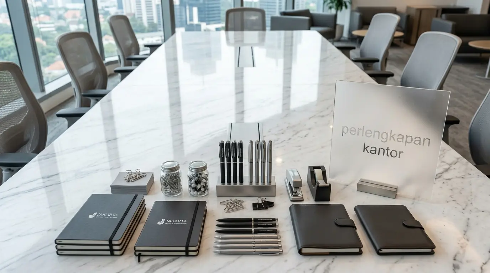
Supplier ATK Terdekat Jakarta untuk Pengadaan Rutin Perusahaan
Cari supplier ATK terdekat Jakarta untuk pengadaan rutin kantor. Dapatkan penawaran grosir resmi dari penyedia Perlengkapan Kantor sekarang.
Baca Artikel arrow_forward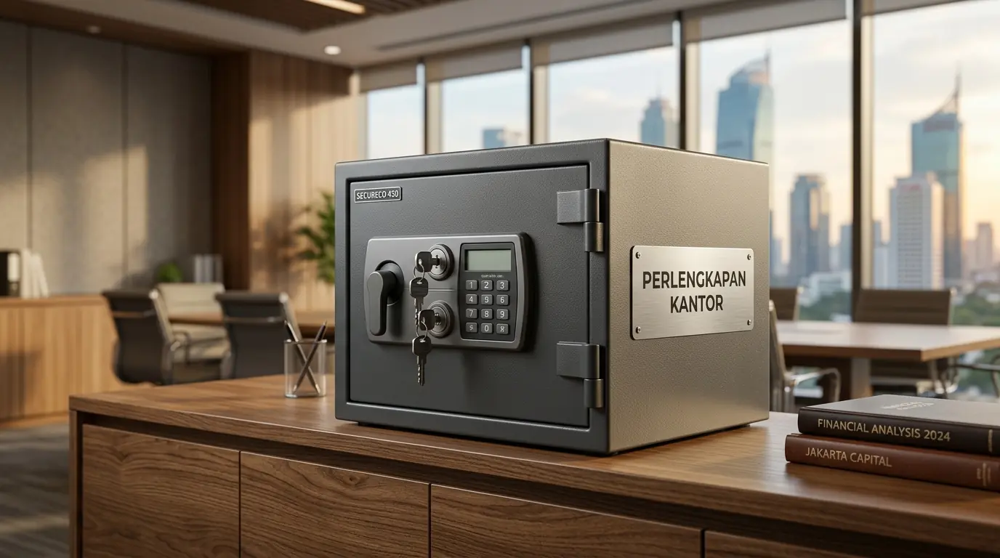
Daftar Harga Brankas Kantor Digital Murah Kunci Ganda
Informasi daftar harga brankas kantor digital murah dengan sistem kunci ganda untuk keamanan dokumen. Dapatkan penawaran Perlengkapan Kantor grosir.
Baca Artikel arrow_forward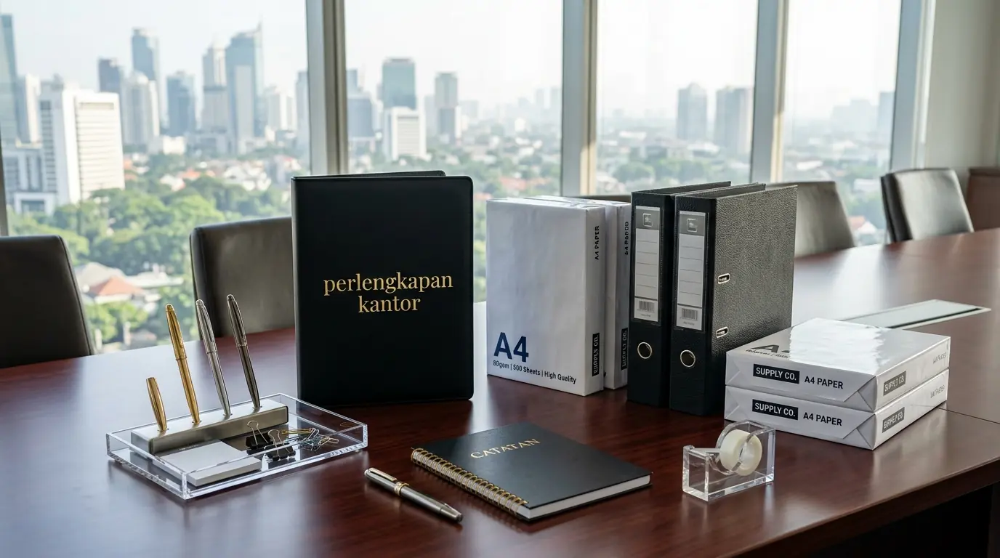
Proposal Jasa Pengadaan Perlengkapan Kantor B2B Hemat
Dapatkan proposal jasa pengadaan perlengkapan kantor B2B terpercaya untuk operasional perusahaan baru. Hubungi Perlengkapan Kantor sekarang.
Baca Artikel arrow_forward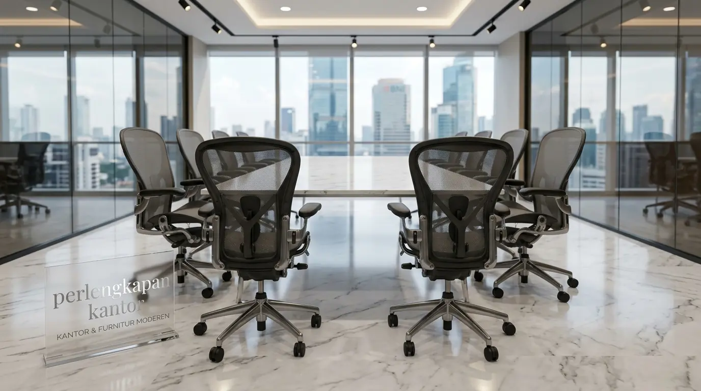
Rekomendasi Kursi Kerja Ergonomis Garansi 5 Tahun Murah
Cek rekomendasi kursi ergonomis kantor terbaik dengan garansi 5 tahun untuk produktivitas kerja. Dapatkan penawaran Perlengkapan Kantor sekarang.
Baca Artikel arrow_forward
7 Desain Tata Ruang Kantor Minimalis Produktif
Temukan 7 contoh desain tata ruang kantor minimalis untuk meningkatkan efisiensi kerja. Dapatkan pasokan Perlengkapan Kantor berkualitas sekarang.
Baca Artikel arrow_forward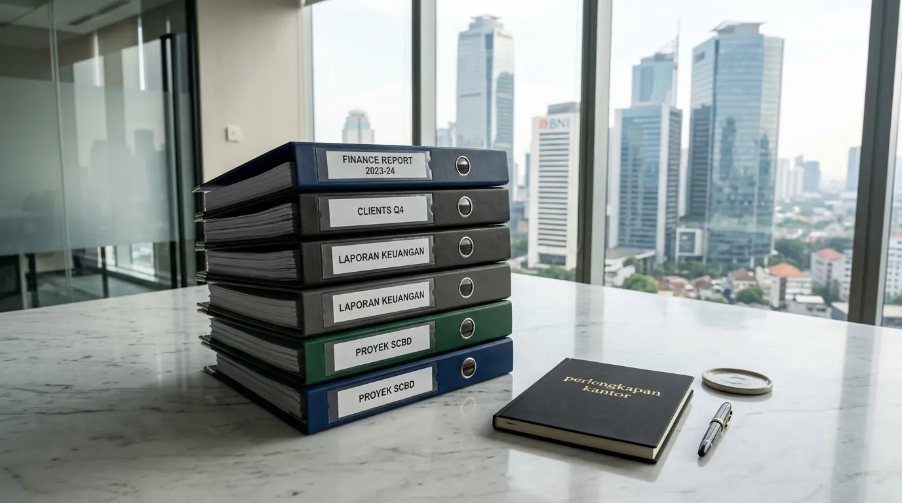
Merk Ordner Terbaik Kearsipan Kantor Kuat Tahan Lama
Pilihan merk ordner terbaik kearsipan kantor yang kuat, awet, dan tahan lama. Dapatkan penawaran grosir resmi dari Perlengkapan Kantor sekarang.
Baca Artikel arrow_forward
Checklist Perlengkapan WFH Esensial Kerja Lebih Produktif
Daftar checklist perlengkapan WFH esensial untuk tingkatkan kenyamanan dan produktivitas. Dapatkan penawaran Perlengkapan Kantor grosir sekarang.
Baca Artikel arrow_forward
Bagaimana Cara Memilih Brankas Dokumen Kantor yang Benar-Benar Tahan Api?
Panduan memilih brankas dokumen tahan api terbaik untuk kantor. Ketahui sertifikasi standar ketahanan api, jenis pengunci, dan kapasitas penyimpanan arsip penting Anda.
Baca Artikel arrow_forward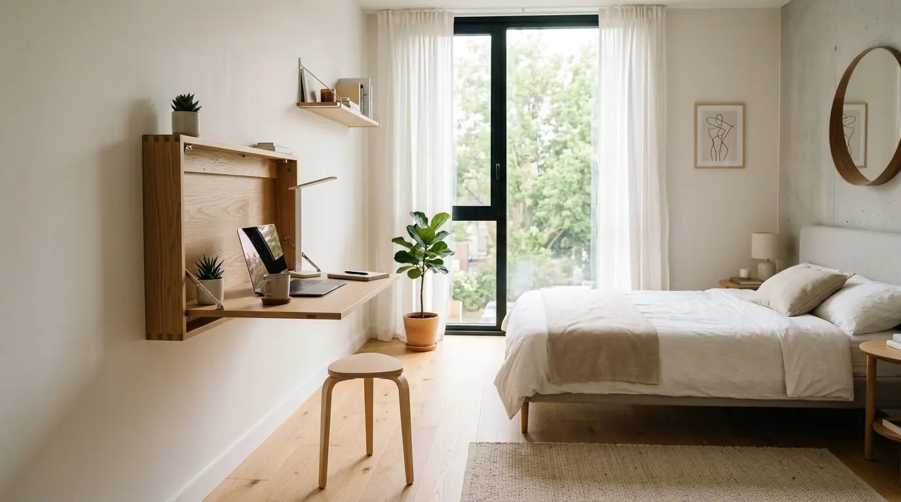
Rekomendasi Meja Lipat Kerja Minimalis Terbaik untuk Kamar Tidur
Cari rekomendasi meja lipat kerja minimalis terbaik untuk kamar tidur? Dapatkan panduan hemat ruang, desain ergonomis modern, dan penawaran Perlengkapan Kantor eksklusif!
Baca Artikel arrow_forward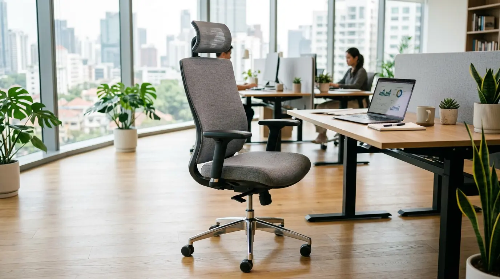
Harga Grosir Kursi Kantor Ergonomis Staff untuk Pengadaan Perusahaan
Info harga grosir kursi kantor ergonomis staff terbaik untuk pengadaan perusahaan. Dapatkan penawaran beli kursi kantor ergonomis grosir hemat dan berkualitas!
Baca Artikel arrow_forward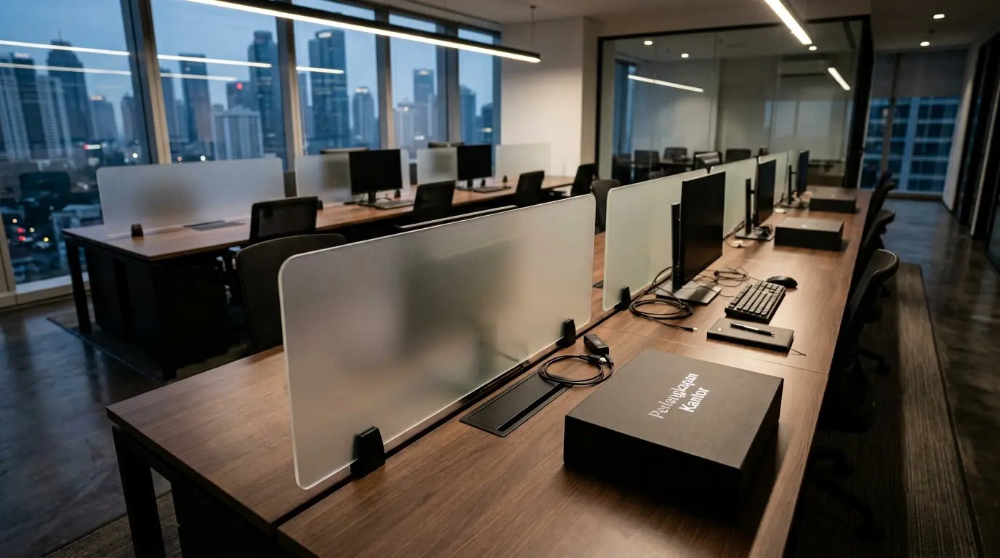
Estimasi Biaya dan Harga Partisi Meja Kantor Sekat
Cek estimasi biaya dan harga partisi meja kantor sekat per unit terbaru. Dapatkan penawaran partisi berkualitas dari Perlengkapan Kantor.
Baca Artikel arrow_forward
Daftar Harga Grosir Map Ordner F4 Murah Jakarta
Cek daftar harga grosir map ordner F4 murah Jakarta untuk pengarsipan kantor. Dapatkan penawaran harga grosir dari Perlengkapan Kantor.
Baca Artikel arrow_forward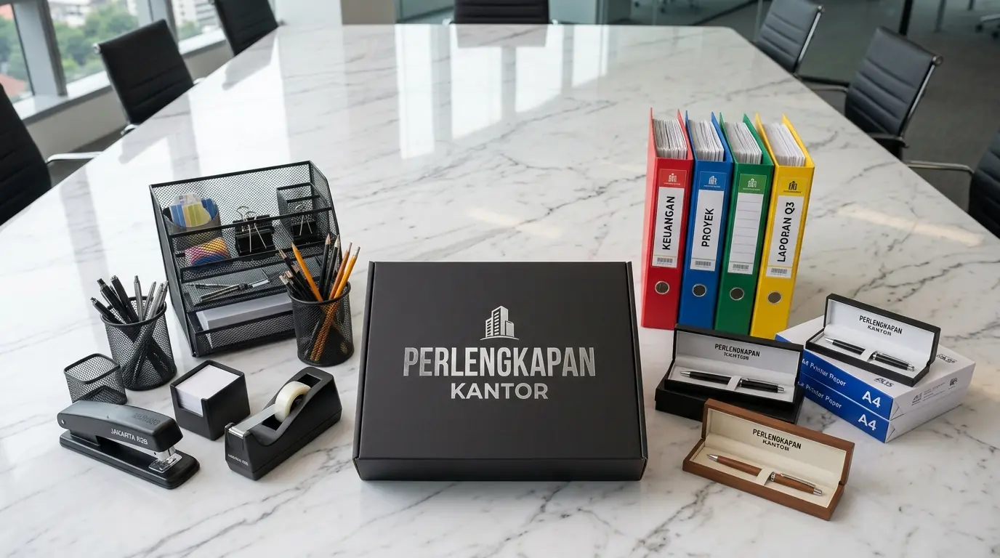
Prosedur Pengadaan Alat Tulis Kantor B2B Terbaik
Pelajari prosedur pengadaan alat tulis kantor B2B terstruktur untuk efisiensi biaya operasional perusahaan. Dapatkan pasokan Perlengkapan Kantor sekarang.
Baca Artikel arrow_forward
10 Kursi Kantor Ergonomis Terbaik Bebas Sakit Pinggang
Rekomendasi kursi kerja ergonomis dengan fitur lumbar support terbaik untuk kenyamanan kerja seharian.
Baca Artikel arrow_forward
Paket Hemat Meja & Kursi Belajar Kerja Minimalis
Set meja dan kursi kerja minimalis harga terjangkau untuk ruang kerja rumah maupun kantor perkotaan.
Baca Artikel arrow_forward
Rekomendasi Mesin Penghancur Kertas Heavy Duty
Panduan memilih paper shredder berkualitas tinggi untuk menjaga keamanan dokumen rahasia perusahaan Anda.
Baca Artikel arrow_forwardDapatkan Konsultasi Desain Gratis
Tim desainer interior kami siap membantu merencanakan tata letak furnitur ideal untuk kantor Anda.
Konsultasi Gratis via WhatsApp